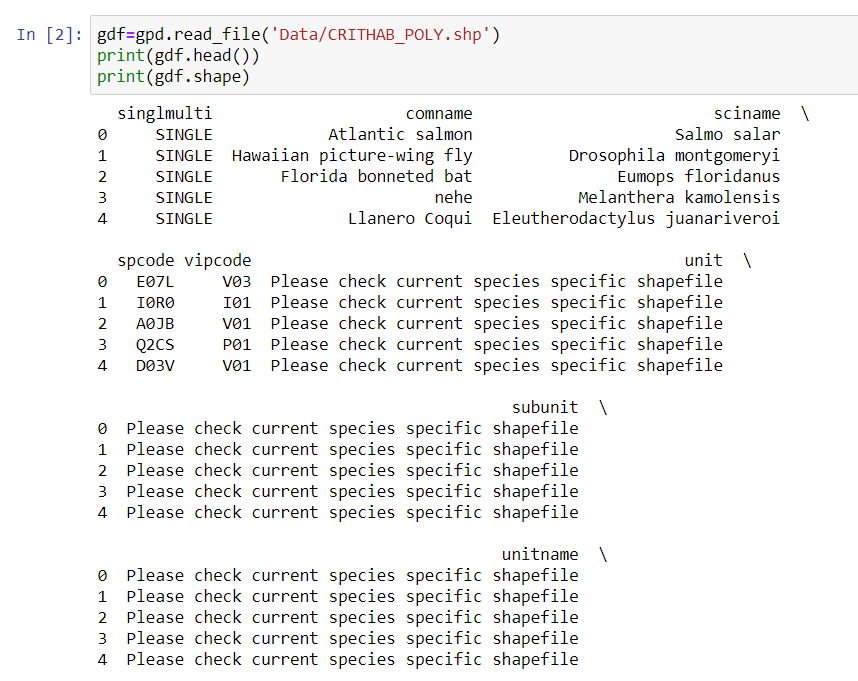
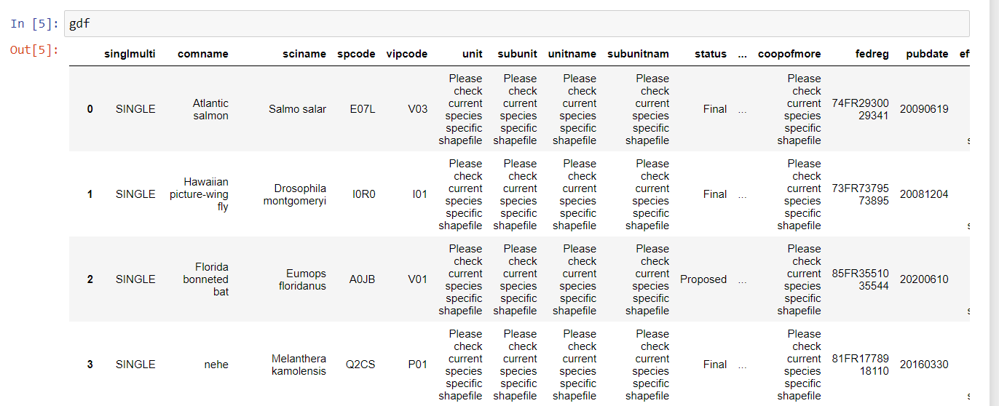
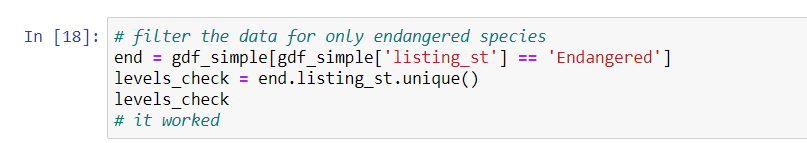
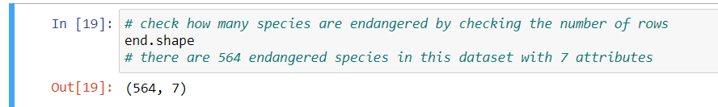
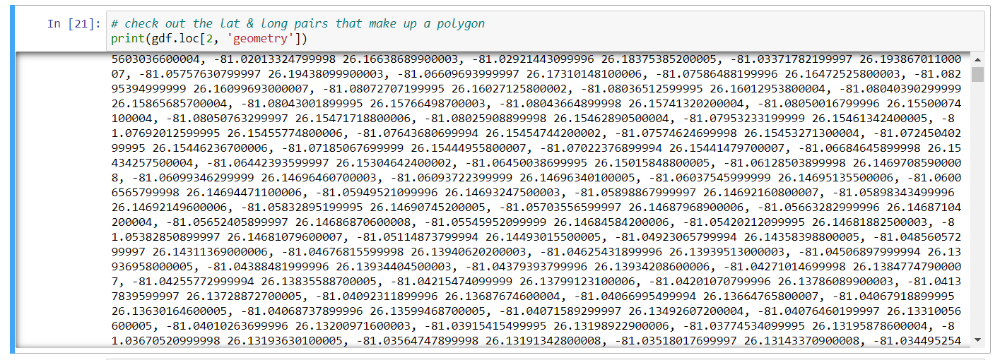
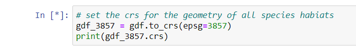
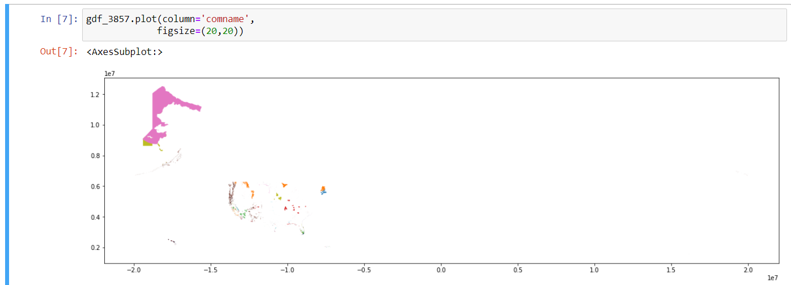
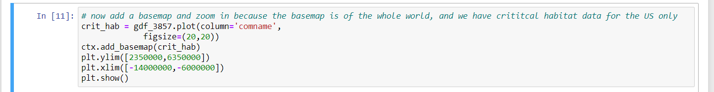

Let’s map the critical habitat ranges of this bat and many other species of concern on a basemap of the United States.
Python and Jupyter Notebooks
Transitioning from R in Rstudioto Python in Jupyter Notebook can be difficult, as is learning any new language. We have to say goodbye to the exceptionally user-friendly RStudio interface with its git GUI, visible environment, and easily accessible console and terminal windows. Let’s dive into the objected oriented language of Python through Jupyter Notebook and the mysterious terminal. Personally, I struggled every step of this journey with lots of syntax errors, merge conflicts, and endless Google searching. I hope this post will help hold your hand as we make this change together.
First things first, if you’re using Jupyter Notebooks to code in Python, you’re gonna have to install Anaconda Navigator and install conda into your home directory. As a PC user, installing conda really threw me and my laptop for a loop. But what better way to learn to use the terminal besides struggling to install stuff you desperately need for grad school? Errors and trouble-shooting is what makes us stronger data scientists, even if we don’t want to recognize that as we fight the urge to throw our computer out the window.
After installing Anaconda, start your journey plotting shapefiles in Python by opening up Jupyter Notebooks. I like to do this from the Anaconda Prompt (the Aanconda terminal), because I’m working on a PC and it’s tricky to get my normal command line or Bash to recognize that conda is indeed on my computer. My favorite flow is as follows:
- From the start menu, open a terminal through Anaconda Navigator that’s called “Anaconda Prompt”.
- Install
geopandaswithconda install geopandasin your base environment (which is the default). If that doesn’t work (which would not surpise me if you’re on a PC), create a new environment to do so. I found the steps on this website to be helpful: https://medium.com/analytics-vidhya/fastest-way-to-install-geopandas-in-jupyter-notebook-on-windows-8f734e11fa2b. I tried installinggeopandasin my base environment, but it was difficult to install all the correct versions of all the dependencies, so I decided to take the easy route and just make a new environment forgeopandasand any other spatial analysis packages I’ll need. Maybe one day I’ll get familiar with version-specific terminal installations and I will be able to install whatever my heart pleases in my base environment.
- Activate the environment in which you have installed the
geopandaspackage. I named that environmentgeo_env, so I typeactivate geo_env.
- Now that I am in my desired environment, I am going to navigate to the folder in my terminal in which I want to open and save my Jupyter Notebook. That command is
cd file/path/to/folder. You know this worked if your terminal working directory now has that file path tacked onto the end. This file path step is not required if you want to include relative file paths to import data and save your notebook. Personally, I do not recommend using relative file paths if you can avoid it in any interface.
- Download your spatial data files to this folder to make your life easier in 2 minutes when you import your spatial data in Jupyter Notebook.
- Open Jupyter Notebooks by typing just that:
jupyter notebook. This will tell your terminal to pop open Jupyter Notebook in your browser with your folder of choice already open and ready to go.
- In the upper right side, open a new notebook.
- Note: the Anaconda terminal window you used to open this notebook should not be closed during your work session. It must remain open to keep your kernel connected and give you the ability to save! If you need to run any terminal commands after you have already opened this notebook, such as if you need to download a package or check a file location, just open up another terminal window and enter the geo_env environment to do so.
Import Some Packages (modules)
For plotting shapefiles, you’ll want to import the following packages:
import pandas as pd
import numpy as np
import geopandas as gpd
import matplotlib.pyplot as plt
import contextily as ctx
matplotlib will allow us to plot our data and manipulate the plot as we see fit. contextily will allow us to add a default basemap under our polygons of interest. If you do not already have this installed, consider using a channel and conda forge to install it in the terminal.
As a proponent of reproducibility and credditing those who provided the data, I like to include a markdown chunk following my package imports that includes a URL link to where I found my data, along with a citation if necessary and any notes about how I downloaded it:
Data source: US Fish and Wildlife https://ecos.fws.gov/ecp/report/table/critical-habitat.html
- contains .shp, .dbf, and .shx polygon files that relate to critical species habiata in the United States - I chose the first zip file you see on this site
- good metadata available
Importing Data
Let’s import your data! Now is the time you’re gonna be thanking yourself for placing your jupyter notebook in the same folder as your data. We will use geopandas to read in the shapefile with your polygons or lines or points of choice (you will not find a combination of these shapes in the same shapefile, because that’s just how the world works). You might take a look at all the data files and feel a little overwhelmed at the choices due to the way that shapefiles and their metadata are stored separately (.shp, .dbf, .shx, .xml, and so on). In this example we are trying to import a shapefile of polygons, so that .shp file is the only one you need to read in:
Import the data:
gdf = gpd.read_file('CRITHAB_POLY.shp')
Take a look at the first rows:
print(gdf.head())
Ask Python how many rows and columns are in this dataframe:
print(gdf.shape)
My only complaint with the head() function is that it returns the first rows in a plain text format:

If you want to see the first and last few rows of the dataframe in a format that looks more familiar (like how R studio presents dataframes), try just typing the name of the data frame, gdf:

This shapefile I read in contains polygons that designate the critical habitat ranges for many endangered and threatened species in the United States. I chose to name it gdf for geodataframe. While you can name objects whatever you want, it is helpful to you and to those reading your code to name things meaningfully. Expect that you will be modifying this dataframe as you go through this mapping process (subsetting columns, filtering for certain factor levels, etc.) so you will likely be tacking on more words to gdf to tell these modified versions apart. Start naming things simply and clearly, and get more specific as you process your data.
If your dataset has a lot of columns and you want to call them, you can use:
print(gdf.columns)
Wanna check the different factor levels in this dataset? Run the following:
status_levels = gdf.listing_st.unique()
status_levels
Using U.S. Fish and Wildlife as an example, now that you know the factor levels of a categorical variable, you can subset for only “endangered” species, only “threatened” species, etc.

Feel free to play around with your dataset a bit. Google some of the species, subset the columns, search for some NA values, or take the average of a numerical column. After you make a structural change, its a good habit to check the status or dimensions of your dataset.
Check the number of rows and columns: 
Print the latitude and longitude pairs that make up a particular polygon: 
Coordinate Reference System
As a last step before you plot, you have to make sure you set the data to the desired coordinate reference system (CRS). This is pretty standard for all kinds of spatial data, since your data might come with an unfamiliar CRS or have no CRS at all if you are making a mask, a raster, or executing similar geospatial processes. For information about coordinate reference systems, check out this guide:
https://www.nceas.ucsb.edu/sites/default/files/2020-04/OverviewCoordinateReferenceSystems.pdf
But you technically do not need to understand many details about datums and CRS’s for mapping shapefiles, so just for now you should know 3 common CRS’s:
- WGS84 (EPSG: 4326), which is commonly used for GIS data across the globe or across multiple countries
and
- NAD83 (EPSG:4269), which is most commonly used for federal agencies
and
- Mercator (EPSG: 3857), which is used for tiles from Google Maps, Open Street Maps, and Stamen Maps. I will use this one today because I want to overlay my polygons onto a Google basemap with
contextily.
Set the crs:
gdf_3857=gdf.to_crs(epsg=3857)
Check that the CRS is what you want:
print(gdf_3857.crs)
This code may take a minute to run. In Jupyter Notebook, you know that code chunk is still chuggin’ away if you see an asterisk in brackets to the left of the code chunk:

Plotting Shapefiles
Use the plot() function from matplotlib and make the fill depend on the species name: gdf_3857.plot(column='comname',
figsize=(20,20))

Note that you did not have to call the package to use the function plot(). Instead, you can name the dataframe which you want to plot, which is gdf_3857 in this case, then specify the function plot() and add arguments and supplemental plot structure changes as you go.
The fig size can be whatever you want. 10-20 is usually good enough. You have finer control over the degree of zoom of the map with the arguments xlim() and ylim(), anyway. These polygons are just floating in space, so lets add a basemap to give us geographical context:
crit_hab_polys = gdf_3857.plot(column='comname',
figsize=(20,20))
Notice that I used an argument in the plot function, setting the column = 'comname', which is a column within the gdf_3857 geodataframe that specifies the common name for the species in that row. This argument sets a unique color to each common name, which will help us tell the difference between each species’ habitat on the map, even if 1 species’ habitat is composed of multiple polygons. ctx.add_basemap(crit_hab_polys)
Set the axis limits to zoom in on just the lower 48 states, rather than viewing the entire world:
plt.ylim([2350000,6350000])
Since the basemap within the contextily package is of the entire world, we need to specify the x-limitations and y-limitations for our map so we can zoom in on the United States to best understand our data. The default x and y units were in the millions, so I specified my units in millions, too. When considering if I should plug in positive or negative values, I considered the way that coordinate reference systems are designed with positive values for North and East, and negative values for South and West. I considered that the United States are north of the equator (which is 0 in the North and South directions), so I should have positive values for the min and max y. As for the magnitude of my values, I simply looked at the map for a starting point and played around with different numbers until I got the view I wanted. plt.xlim([-14000000,-6000000]) Notice that these values are negative. Along similar thinking to how we decided on our y limitation, these negative values are the result of how coordinate systems are designed. Consider the prime meridian (which lies at 0 degrees in the East and West directions) with West being negative. Since the United States are to the West of the prime meridian, we know that the x-range for our zoom should be negative. As for the magnitude, I just palyed around with the numbers until I got the East-West orientation that encompassed the United States. Use the show() function in matplotlib to tell Python to show the most recently created graph:
plt.show()
 
You did it! Welcome to the wonderful world of geospatial data in Python. Now you can start answering questions like “Which endangered species live near me?” and “Which state or biome houses the most critical habitat for these species?”